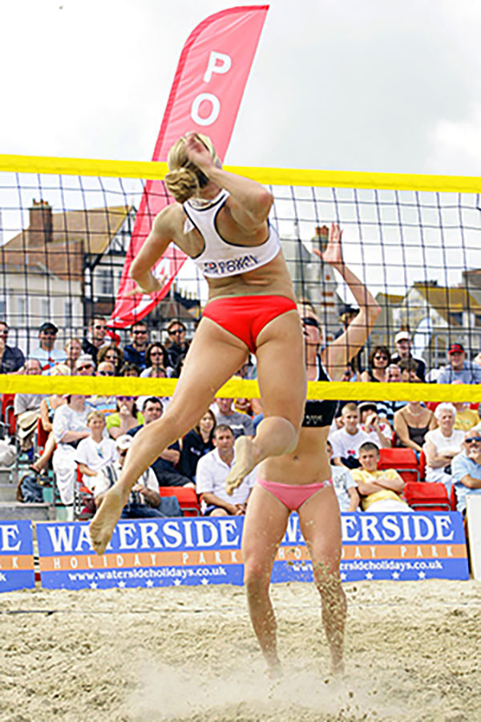

Fun for all the family!Who Can PlayThere are 800 million players worldwide who play volleyball at least once a week. Volleyball is a sport that is safe, fun and does not require extreme fitness. Since you don’t have to move around the court too much, it’s great for people who want a low-impact sport that will help them get fit without pushing them to their limit. For those who are a bit more competitive, the sport is fantastic because games can be really exciting and intense, but there’s always a net between you and your opponents. Beach volleyball is suitable for people of all ages, and men and women alike. Anyone considering starting a new sport or exercise program should see their doctor first. |
 |